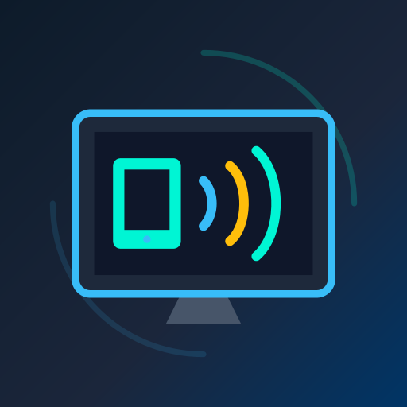
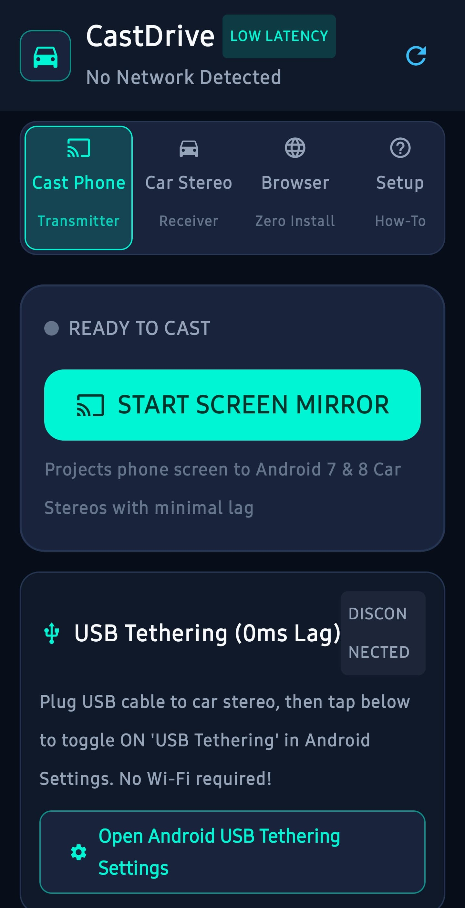

Open Source.
Built to Connect.
Building practical, privacy-first software to connect Android devices, car head units, and desktop computers. Distributing verified builds through an automated, self-hosted F-Droid repository.
CastDrive
Real-time Android screen mirroring designed to turn your phone into a low-latency transmitter and secondary Android hardware, automotive stereos, or desktop browsers into responsive receivers.

CastDrive
Native Android Receiver
Run CastDrive on a second Android device, car stereo, or tablet to receive real-time, low-latency video transmission in full-screen with dedicated connection status controls.
Reverse Touchscreen Control
Enables two-way interaction. The receiving touchscreen can send taps, drags, swipes, and system navigation commands (Back, Home, Recents) back to the transmitter using Android's Accessibility framework without requiring root.
Internal Audio Mirroring
Supports capturing and transmitting internal Android system audio along with the video stream in supported native receiver configurations and tested browser setups.
Display & Rotation Controls
Fine-grained controls tailored for automotive head units: toggle between Fit, Fill, and Fullscreen modes, plus instant screen rotation to 0°, 90°, 180°, or 270° orientation.
Multiple Connection Modes
Connect over local Wi-Fi with automatic UDP discovery, use the phone's Wi-Fi hotspot when away from home, or utilize USB tethering for direct wired low-latency links.
Zero-Install Browser Receiver
Turn any PC, laptop, or browser-equipped device on your network into a receiver simply by opening http://<phone-ip>:8080. No dedicated PC installation required.
Phone-First Development Workflow
CastDrive was developed and tested entirely from an Android device using Google AI Studio without requiring a desktop IDE during the primary development cycle. Over roughly 20 iterative development loops, it was tested on real automotive and mobile hardware, refining low-latency screen streaming, touch feedback, audio piping, and network discovery.
Verified App Screenshots
Direct captures from active CastDrive builds running on Android hardware.

Transmitter Control Hub
Main interface on the Android phone. Shows real-time connection status, transmitter toggle, receiver IP input, port, and audio configuration.
Install Through F-Droid
RSR-Projects operates an independent F-Droid repository. Adding this repository to your client provides automated updates, cryptographic index verification, and seamless installation.
Third-Party Repository: This is a dedicated, self-hosted repository operated directly by RSR-Projects. It is independent of the default upstream F-Droid catalogue.
https://rsr-projects.github.io/RSR-FDroid/fdroid/repo
-
1
Open F-Droid Settings
Launch the F-Droid app on your Android device and navigate to Settings → Repositories.
-
2
Add Repository
Tap the + (Add) button in the top right or scan the QR code directly using your phone's camera.
-
3
Paste Repository Address
Paste the copied address
https://rsr-projects.github.io/RSR-FDroid/fdroid/repoand confirm. -
4
Sync and Install CastDrive
Refresh your repository index. Search for CastDrive to install and receive future updates automatically.
Prefer direct installation?
Download the signed standalone APK without adding the repository.
Scan to Add Repository
Point your F-Droid client scanner or camera to add the repository automatically on your device.
RSR-Projects Ecosystem
Projects actively maintained or under development within the RSR-Projects open-source organization.
CastDrive
Android screen mirroring transmitter and multi-platform receiver system for automotive stereos, tablets, and web browsers with reverse touch support.
RSR-FDroid
Automated F-Droid third-party repository and GitHub Pages publishing workflow, featuring cryptographic index signing and APK distribution.
Ecosystem Companion Tools
Future companion utilities, wireless bridge helpers, and audio forwarding extensions designed to integrate with the RSR multi-screen ecosystem.